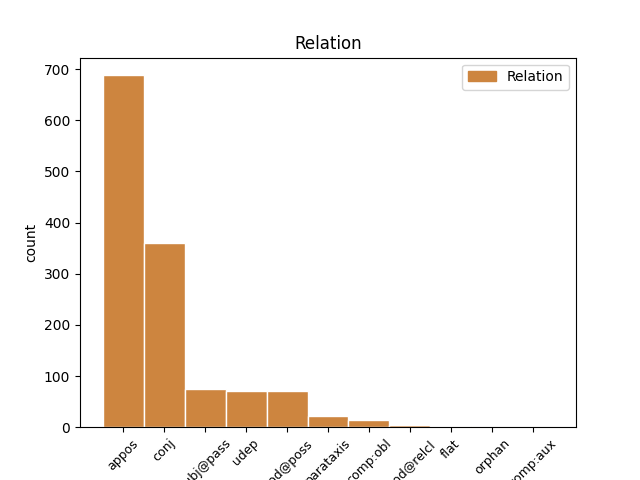
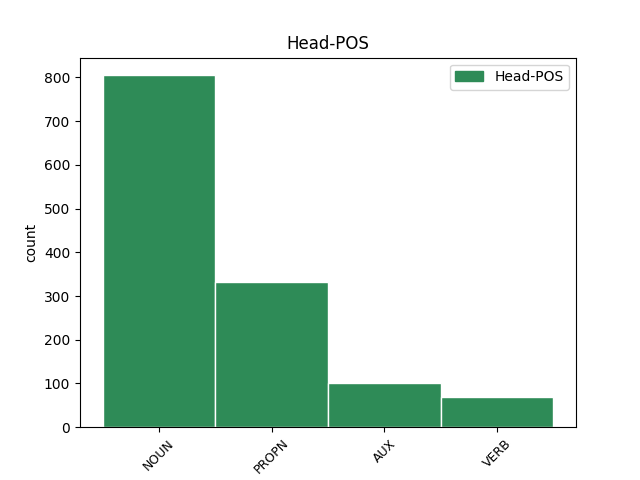
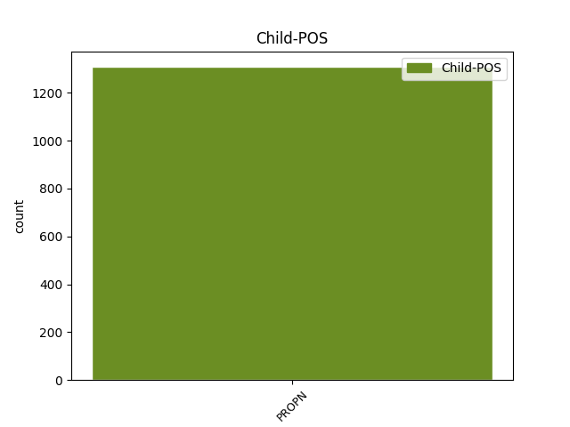

Distribution of features within this leaf



Agreement Rules sorted by frequency.
- When the dependent token is the appositional modifier(appos) of the head token, and the dependent token is PROPN.
1 Welke _ _ _ _ 0 _ _ _
2 componist _ _ _ _ 0 _ _ _
3 was _ _ _ _ 0 _ _ _
4 net _ _ _ _ 0 _ _ _
5 als _ _ _ _ 0 _ _ _
6 zijn _ _ _ _ 0 _ _ _
7 zusje zus NOUN N|soort|ev|dim|onz|stan Gender=Neut|Number=Sing 0 _ _ _
8 Fanny Fanny PROPN N|eigen|ev|basis|zijd|stan Gender=Com|Number=Sing 7 appos _ _
9 een _ _ _ _ 0 _ _ _
10 getalenteerd _ _ _ _ 0 _ _ _
11 schilder _ _ _ _ 0 _ _ _
12 ? _ _ _ _ 0 _ _ _
1 Welke _ _ _ _ 0 _ _ _
2 speciale _ _ _ _ 0 _ _ _
3 dag _ _ _ _ 0 _ _ _
4 verbindt _ _ _ _ 0 _ _ _
5 men _ _ _ _ 0 _ _ _
6 met _ _ _ _ 0 _ _ _
7 namen _ _ _ _ 0 _ _ _
8 als _ _ _ _ 0 _ _ _
9 ` _ _ _ _ 0 _ _ _
10 Utah _ _ _ _ 0 _ _ _
11 ' _ _ _ _ 0 _ _ _
12 , _ _ _ _ 0 _ _ _
13 ` _ _ _ _ 0 _ _ _
14 Omaha _ _ _ _ 0 _ _ _
15 ' _ _ _ _ 0 _ _ _
16 , _ _ _ _ 0 _ _ _
17 ` _ _ _ _ 0 _ _ _
18 Juno _ _ _ _ 0 _ _ _
19 ' _ _ _ _ 0 _ _ _
20 , _ _ _ _ 0 _ _ _
21 ` _ _ _ _ 0 _ _ _
22 Gold Gold PROPN N|eigen|ev|basis|zijd|stan Gender=Com|Number=Sing 0 _ _ _
23 ' _ _ _ _ 0 _ _ _
24 en _ _ _ _ 0 _ _ _
25 ` _ _ _ _ 0 _ _ _
26 Sword Sword PROPN N|eigen|ev|basis|genus|stan Gender=Com,Neut|Number=Sing 22 conj _ SpaceAfter=No
27 ' _ _ _ _ 0 _ _ _
28 ? _ _ _ _ 0 _ _ _
1 De _ _ _ _ 0 _ _ _
2 auto's _ _ _ _ 0 _ _ _
3 en _ _ _ _ 0 _ _ _
4 motorfietsen _ _ _ _ 0 _ _ _
5 van _ _ _ _ 0 _ _ _
6 het _ _ _ _ 0 _ _ _
7 Duitse _ _ _ _ 0 _ _ _
8 DKW _ _ _ _ 0 _ _ _
9 waren _ _ _ _ 0 _ _ _
10 zeer _ _ _ _ 0 _ _ _
11 populair _ _ _ _ 0 _ _ _
12 . _ _ _ _ 0 _ _ _
13 DKW DKW PROPN N|eigen|ev|basis|onz|stan Gender=Neut|Number=Sing 14 subj@pass _ _
14 werd worden AUX WW|pv|verl|ev Number=Sing|Tense=Past|VerbForm=Fin 0 _ _ _
15 dan _ _ _ _ 0 _ _ _
16 ook _ _ _ _ 0 _ _ _
17 uitgelegd _ _ _ _ 0 _ _ _
18 als _ _ _ _ 0 _ _ _
19 ? _ _ _ _ 0 _ _ _
1 Hoe _ _ _ _ 0 _ _ _
2 noemt _ _ _ _ 0 _ _ _
3 men _ _ _ _ 0 _ _ _
4 in _ _ _ _ 0 _ _ _
5 de _ _ _ _ 0 _ _ _
6 christelijke _ _ _ _ 0 _ _ _
7 mystiek _ _ _ _ 0 _ _ _
8 de _ _ _ _ 0 _ _ _
9 laatste _ _ _ _ 0 _ _ _
10 fase _ _ _ _ 0 _ _ _
11 van _ _ _ _ 0 _ _ _
12 bespiegeling _ _ _ _ 0 _ _ _
13 die _ _ _ _ 0 _ _ _
14 leidt _ _ _ _ 0 _ _ _
15 tot _ _ _ _ 0 _ _ _
16 het _ _ _ _ 0 _ _ _
17 innerlijk _ _ _ _ 0 _ _ _
18 aanschouwen _ _ _ _ 0 _ _ _
19 van _ _ _ _ 0 _ _ _
20 Gods God PROPN N|eigen|ev|basis|gen Number=Sing 21 mod@poss _ _
21 beeld beeld NOUN N|soort|ev|basis|onz|stan Gender=Neut|Number=Sing 0 _ _ _
22 ? _ _ _ _ 0 _ _ _
1 Ik _ _ _ _ 0 _ _ _
2 wil _ _ _ _ 0 _ _ _
3 begin begin NOUN N|soort|ev|basis|onz|stan Gender=Neut|Number=Sing 0 _ _ _
4 januari januari PROPN N|eigen|ev|basis|zijd|stan Gender=Com|Number=Sing 3 udep _ _
5 2003 _ _ _ _ 0 _ _ _
6 het _ _ _ _ 0 _ _ _
7 boek _ _ _ _ 0 _ _ _
8 uitgeven _ _ _ _ 0 _ _ _
1 Hoe _ _ _ _ 0 _ _ _
2 heet _ _ _ _ 0 _ _ _
3 de _ _ _ _ 0 _ _ _
4 roverhoofdman _ _ _ _ 0 _ _ _
5 uit _ _ _ _ 0 _ _ _
6 ` _ _ _ _ 0 _ _ _
7 Duizend _ _ _ _ 0 _ _ _
8 en _ _ _ _ 0 _ _ _
9 een _ _ _ _ 0 _ _ _
10 nacht _ _ _ _ 0 _ _ _
11 ' _ _ _ _ 0 _ _ _
12 die _ _ _ _ 0 _ _ _
13 de _ _ _ _ 0 _ _ _
14 berg _ _ _ _ 0 _ _ _
15 opent _ _ _ _ 0 _ _ _
16 met _ _ _ _ 0 _ _ _
17 de _ _ _ _ 0 _ _ _
18 spreuk _ _ _ _ 0 _ _ _
19 ' _ _ _ _ 0 _ _ _
20 Sesam Sesam PROPN N|eigen|ev|basis|genus|stan Gender=Com,Neut|Number=Sing 22 parataxis _ SpaceAfter=No
21 , _ _ _ _ 0 _ _ _
22 open openen VERB WW|pv|tgw|ev Number=Sing|Tense=Pres|VerbForm=Fin 0 _ _ _
23 u _ _ _ _ 0 _ _ _
24 ! _ _ _ _ 0 _ _ _
25 ' _ _ _ _ 0 _ _ _
26 ? _ _ _ _ 0 _ _ _
1 De _ _ _ _ 0 _ _ _
2 Russische _ _ _ _ 0 _ _ _
3 premier _ _ _ _ 0 _ _ _
4 was _ _ _ _ 0 _ _ _
5 op _ _ _ _ 0 _ _ _
6 de _ _ _ _ 0 _ _ _
7 terugreis _ _ _ _ 0 _ _ _
8 uit _ _ _ _ 0 _ _ _
9 Hanoi _ _ _ _ 0 _ _ _
10 en _ _ _ _ 0 _ _ _
11 deed doen VERB WW|pv|verl|ev Number=Sing|Tense=Past|VerbForm=Fin 0 _ _ _
12 Mao Mao PROPN N|eigen|ev|basis|zijd|stan Gender=Com|Number=Sing 11 comp:obl _ _
13 het _ _ _ _ 0 _ _ _
14 voorstel _ _ _ _ 0 _ _ _
15 te _ _ _ _ 0 _ _ _
16 komen _ _ _ _ 0 _ _ _
17 tot _ _ _ _ 0 _ _ _
18 een _ _ _ _ 0 _ _ _
19 gezamenlijk _ _ _ _ 0 _ _ _
20 optreden _ _ _ _ 0 _ _ _
21 ten _ _ _ _ 0 _ _ _
22 aanzien _ _ _ _ 0 _ _ _
23 van _ _ _ _ 0 _ _ _
24 de _ _ _ _ 0 _ _ _
25 oorlog _ _ _ _ 0 _ _ _
26 in _ _ _ _ 0 _ _ _
27 Vietnam _ _ _ _ 0 _ _ _
28 . _ _ _ _ 0 _ _ _
1 Oom oom NOUN N|soort|ev|basis|zijd|stan Gender=Com|Number=Sing 0 _ _ _
2 Jan Jan PROPN N|eigen|ev|basis|zijd|stan Gender=Com|Number=Sing 1 flat _ _
3 heeft _ _ _ _ 0 _ _ _
4 het _ _ _ _ 0 _ _ _
5 nog _ _ _ _ 0 _ _ _
6 proberen _ _ _ _ 0 _ _ _
7 te _ _ _ _ 0 _ _ _
8 doen _ _ _ _ 0 _ _ _
9 , _ _ _ _ 0 _ _ _
10 maar _ _ _ _ 0 _ _ _
11 vergeefs _ _ _ _ 0 _ _ _
12 . _ _ _ _ 0 _ _ _
1 De _ _ _ _ 0 _ _ _
2 duiven _ _ _ _ 0 _ _ _
3 hebben _ _ _ _ 0 _ _ _
4 anderhalf _ _ _ _ 0 _ _ _
5 uur _ _ _ _ 0 _ _ _
6 achterstand _ _ _ _ 0 _ _ _
7 op _ _ _ _ 0 _ _ _
8 een _ _ _ _ 0 _ _ _
9 groep groep NOUN N|soort|ev|basis|zijd|stan Gender=Com|Number=Sing 0 _ _ _
10 van _ _ _ _ 0 _ _ _
11 vijf _ _ _ _ 0 _ _ _
12 , _ _ _ _ 0 _ _ _
13 waarin _ _ _ _ 0 _ _ _
14 Eddy Eddy PROPN N|eigen|ev|basis|zijd|stan Gender=Com|Number=Sing 9 mod@relcl _ SpaceAfter=No
15 , _ _ _ _ 0 _ _ _
16 Rini _ _ _ _ 0 _ _ _
17 , _ _ _ _ 0 _ _ _
18 Walter _ _ _ _ 0 _ _ _
19 en _ _ _ _ 0 _ _ _
20 Mogens _ _ _ _ 0 _ _ _
21 . _ _ _ _ 0 _ _ _
1 Uit _ _ _ _ 0 _ _ _
2 de _ _ _ _ 0 _ _ _
3 antwoorden _ _ _ _ 0 _ _ _
4 bleek _ _ _ _ 0 _ _ _
5 , _ _ _ _ 0 _ _ _
6 dat _ _ _ _ 0 _ _ _
7 28 _ _ _ _ 0 _ _ _
8 procent _ _ _ _ 0 _ _ _
9 van _ _ _ _ 0 _ _ _
10 de _ _ _ _ 0 _ _ _
11 ondervraagden _ _ _ _ 0 _ _ _
12 de _ _ _ _ 0 _ _ _
13 VPRO _ _ _ _ 0 _ _ _
14 onsymphatiek _ _ _ _ 0 _ _ _
15 vindt _ _ _ _ 0 _ _ _
16 en _ _ _ _ 0 _ _ _
17 13 _ _ _ _ 0 _ _ _
18 procent procent NOUN N|soort|ev|basis|onz|stan Gender=Neut|Number=Sing 0 _ _ _
19 de _ _ _ _ 0 _ _ _
20 VARA VARA PROPN N|eigen|ev|basis|zijd|stan Gender=Com|Number=Sing 18 orphan _ SpaceAfter=No
21 . _ _ _ _ 0 _ _ _
Disagree Examples:
1 Het _ _ _ _ 0 _ _ _
2 lukt _ _ _ _ 0 _ _ _
3 hem _ _ _ _ 0 _ _ _
4 niet _ _ _ _ 0 _ _ _
5 helemaal _ _ _ _ 0 _ _ _
6 , _ _ _ _ 0 _ _ _
7 en _ _ _ _ 0 _ _ _
8 daaraan _ _ _ _ 0 _ _ _
9 danken _ _ _ _ 0 _ _ _
10 we _ _ _ _ 0 _ _ _
11 AmisAllingtons amisallington PROPN N|eigen|ev|basis|gen Number=Sing 13 mod@poss _ _
12 sardonische _ _ _ _ 0 _ _ _
13 portretten portret NOUN N|soort|mv|basis Number=Plur 0 _ _ _
14 van _ _ _ _ 0 _ _ _
15 bezoekers _ _ _ _ 0 _ _ _
16 van _ _ _ _ 0 _ _ _
17 het _ _ _ _ 0 _ _ _
18 landelijke _ _ _ _ 0 _ _ _
19 hotelletje _ _ _ _ 0 _ _ _
20 , _ _ _ _ 0 _ _ _
21 en _ _ _ _ 0 _ _ _
22 vooral _ _ _ _ 0 _ _ _
23 van _ _ _ _ 0 _ _ _
24 een _ _ _ _ 0 _ _ _
25 jonge _ _ _ _ 0 _ _ _
26 , _ _ _ _ 0 _ _ _
27 hoogst _ _ _ _ 0 _ _ _
28 moderne _ _ _ _ 0 _ _ _
29 geestelijke _ _ _ _ 0 _ _ _
30 , _ _ _ _ 0 _ _ _
31 die _ _ _ _ 0 _ _ _
32 met _ _ _ _ 0 _ _ _
33 God _ _ _ _ 0 _ _ _
34 allang _ _ _ _ 0 _ _ _
35 heeft _ _ _ _ 0 _ _ _
36 afgerekend _ _ _ _ 0 _ _ _
37 . _ _ _ _ 0 _ _ _
1 Een _ _ _ _ 0 _ _ _
2 week _ _ _ _ 0 _ _ _
3 geleden _ _ _ _ 0 _ _ _
4 veroverden _ _ _ _ 0 _ _ _
5 de _ _ _ _ 0 _ _ _
6 Oostduitse _ _ _ _ 0 _ _ _
7 dames _ _ _ _ 0 _ _ _
8 in _ _ _ _ 0 _ _ _
9 Boedapest _ _ _ _ 0 _ _ _
10 de _ _ _ _ 0 _ _ _
11 eerste _ _ _ _ 0 _ _ _
12 plaats _ _ _ _ 0 _ _ _
13 en _ _ _ _ 0 _ _ _
14 afgelopen _ _ _ _ 0 _ _ _
15 zaterdag zaterdag PROPN N|eigen|ev|basis|zijd|stan Gender=Com|Number=Sing 18 udep _ _
16 en _ _ _ _ 0 _ _ _
17 zondag _ _ _ _ 0 _ _ _
18 bleken blijken VERB WW|pv|verl|mv Number=Plur|Tense=Past|VerbForm=Fin 0 _ _ _
19 de _ _ _ _ 0 _ _ _
20 heren _ _ _ _ 0 _ _ _
21 in _ _ _ _ 0 _ _ _
22 Stockholm _ _ _ _ 0 _ _ _
23 duidelijk _ _ _ _ 0 _ _ _
24 de _ _ _ _ 0 _ _ _
25 sterksten _ _ _ _ 0 _ _ _
26 . _ _ _ _ 0 _ _ _
1 Appels Appel PROPN N|eigen|ev|basis|gen Number=Sing 2 mod@poss _ _
2 oogappels oogappel NOUN N|soort|mv|basis Number=Plur 0 _ _ _
3 . _ _ _ _ 0 _ _ _
1 Er _ _ _ _ 0 _ _ _
2 zijn zijn VERB WW|pv|tgw|mv Number=Plur|Tense=Pres|VerbForm=Fin 0 _ _ _
3 Belfast Belfast PROPN N|eigen|ev|basis|onz|stan Gender=Neut|Number=Sing 2 comp:obl _ _
4 geen _ _ _ _ 0 _ _ _
5 toekomstmogelijkheden _ _ _ _ 0 _ _ _
6 meer _ _ _ _ 0 _ _ _
7 . _ _ _ _ 0 _ _ _
1 Op _ _ _ _ 0 _ _ _
2 het _ _ _ _ 0 _ _ _
3 terrein _ _ _ _ 0 _ _ _
4 werden _ _ _ _ 0 _ _ _
5 pamfletten _ _ _ _ 0 _ _ _
6 uitgereikt _ _ _ _ 0 _ _ _
7 , _ _ _ _ 0 _ _ _
8 waarin _ _ _ _ 0 _ _ _
9 de _ _ _ _ 0 _ _ _
10 rekruten _ _ _ _ 0 _ _ _
11 , _ _ _ _ 0 _ _ _
12 die _ _ _ _ 0 _ _ _
13 dinsdag dinsdag PROPN N|eigen|ev|basis|zijd|stan Gender=Com|Number=Sing 17 udep _ _
14 voor _ _ _ _ 0 _ _ _
15 het _ _ _ _ 0 _ _ _
16 eerst _ _ _ _ 0 _ _ _
17 waren zijn AUX WW|pv|verl|mv Number=Plur|Tense=Past|VerbForm=Fin 0 _ _ _
18 opgekomen _ _ _ _ 0 _ _ _
19 , _ _ _ _ 0 _ _ _
20 gewezen _ _ _ _ 0 _ _ _
21 werd _ _ _ _ 0 _ _ _
22 op _ _ _ _ 0 _ _ _
23 de _ _ _ _ 0 _ _ _
24 mogelijkheden _ _ _ _ 0 _ _ _
25 van _ _ _ _ 0 _ _ _
26 simulatie _ _ _ _ 0 _ _ _
27 bij _ _ _ _ 0 _ _ _
28 de _ _ _ _ 0 _ _ _
29 keuringen _ _ _ _ 0 _ _ _
30 , _ _ _ _ 0 _ _ _
31 dienstweigering _ _ _ _ 0 _ _ _
32 en _ _ _ _ 0 _ _ _
33 sabotage _ _ _ _ 0 _ _ _
34 in _ _ _ _ 0 _ _ _
35 het _ _ _ _ 0 _ _ _
36 leger _ _ _ _ 0 _ _ _
37 . _ _ _ _ 0 _ _ _